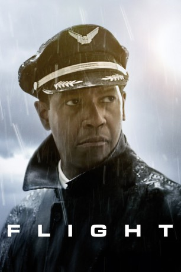

#1209 Flight
Auszeichnungen: für 2 Oscars nominiert
 gesehen am 21.11.2016
gesehen am 21.11.2016
 
 IMDB-Wertung: 7.3 / 10
IMDB-Wertung: 7.3 / 10  Metascore: 76
Metascore: 76 
Flugkapitän Whip Whitaker gerät mit seinem Jet in Turbulenzen, verhindert aber dank einem tollkühnen Manöver einen Totalcrash. Zwar sind einige Opfer zu beklagen, doch das Gros der Passagiere überlebt die Notlandung. Dumm nur, dass der heldenhafte Pilot kurz vor dem Start Alkohol und Kokain konsumiert hatte, sich deswegen vor einem Sicherheitsausschuss verantworten und sein Leben neu regeln muss.
Jahr: 2012
Dauer: 138 Minuten
FSK: 12
Land: USA Studio: Paramount PicturesTonspuren: DTS - ,
Untertitel: Deutsch,
Auflösung: 1080p (1920x800) Größe: 7229 MB
Genre: Drama, Thriller
Regisseur:  Robert Zemeckis
Robert Zemeckis
Drehbuch: John Gatins
Soundtrack: Alan Silvestri
Darsteller:
Datei: X:\2012(A-F)\Flight (2012, FSK12, 1920x800).mkv seit 04.06.2015
Festplatte: HD 2012(A-M)
 Es gibt insgesamt 102 Filme in der Gruppe '2012(A-F)'
Es gibt insgesamt 102 Filme in der Gruppe '2012(A-F)'